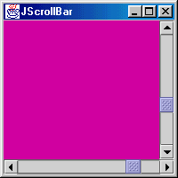
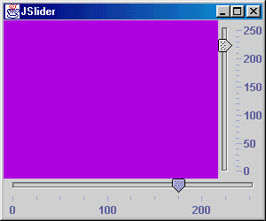
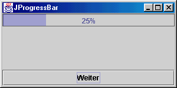

38.4 Quasi-analoge Komponenten
38.4.1 JScrollBar
JScrollBar
ist die leichtgewichtige Swing-Variante der AWT-Klasse Scrollbar
(siehe Abschnitt 32.11). Sie
dient dazu, mit Hilfe eines Schiebereglers einen Wert kontinuierlich
innerhalb vorgegebener Grenzen einzustellen. Der wichtigste Konstruktor
der Klasse JScrollBar
ist:
Mit orientation wird die Ausrichtung
des Schiebereglers festgelegt. Sie kann entweder HORIZONTAL
oder VERTICAL
sein. min gibt den kleinsten,
max den größten möglichen
Wert an. Mit extent wird die
Ausdehnung des Schiebers festgelegt. Sie muss mindestens eins, kann
aber auch größer sein. value
ist der Anfangswert des Schiebers. Er muss zwischen min
und max - extent liegen.
JScrollBar
stellt einige Methoden zur Verfügung, mit denen nach der Instanzierung
auf die numerischen Eigenschaften des Schiebereglers zugegriffen werden
kann:
public int getMinimum()
public void setMinimum(int minimum)
public int getMaximum()
public void setMaximum(int maximum)
public int getVisibleAmount()
public void setVisibleAmount(int extent)
public int getValue()
public void setValue(int value)
|
javax.swing.JScrollBar |
Mit getMinimum,
getMaximum,
setMinimum
und setMaximum
kann auf das Minimum und Maximum des definierten Wertebereichs zugegriffen
werden. getVisibleAmount
liefert die Ausdehnung des Schiebers und mit setVisibleAmount
kann diese abgefragt werden. Mit getValue
und setValue
kann auf den aktuellen Wert des Schiebereglers zugegriffen werden.
Auch auf die Seitengröße kann zugegriffen werden:
public int getUnitIncrement()
public void setUnitIncrement(int unitIncrement)
public int getBlockIncrement()
public void setBlockIncrement(int blockIncrement)
|
javax.swing.JScrollBar |
getUnitIncrement
gibt an, um welchen Betrag der Wert des Schiebereglers verändert
wird, wenn der Anwender einen der Pfeilbuttons betätigt. getBlockIncrement
ermittelt analog dazu den Betrag der Änderung, wenn zwischen
Schieber und Pfeilbuttons geklickt wird. Mit setUnitIncrement
und setBlockIncrement
können beide Werte verändert werden.
Wird der Wert einer JScrollBar
verändert, sendet sie ein AdjustmentEvent
an registrierte Listener. Diese müssen das Interface AdjustmentListener
implementieren und werden durch Aufruf von addAdjustmentListener
registriert. Interessant ist in diesem Zusammenhang die Methode getValueIsAdjusting(),
mit der festgestellt werden kann, auf welche Weise der Wert verändert
wird. Sie gibt genau dann true
zurück, wenn die Änderung Bestandteil einer Kette von Änderungen
ist, wenn also der Anwender den Schieber betätigt. Wurde die
Änderung dagegen durch einen Mausklick auf einen der Buttons
oder auf die Fläche zwischen Buttons und Schieber ausgelöst,
liefert getValueIsAdjusting()
den Wert false.
Das folgende Programm zeigt eine einfache Anwendung der Klasse JScrollBar.
Es stellt zwei Schieberegler zur Verfügung, mit deren Hilfe die
Hintergrundfarbe des in der Mitte angezeigten Panels verändert
werden kann. Alle Änderungen werden durch einen AdjustmentListener
registriert und führen beim Panel zum Aufruf von setBackground.
Am Ende einer Änderungssequenz wird der aktuelle Farbwert auf
der Konsole ausgegeben.
001 /* Listing3812.java */
002
003 import java.awt.*;
004 import java.awt.event.*;
005 import javax.swing.*;
006
007 public class Listing3812
008 extends JFrame
009 implements AdjustmentListener
010 {
011 private JPanel coloredPanel;
012 private JScrollBar sbEast;
013 private JScrollBar sbSouth;
014 private int blue = 0;
015 private int red = 0;
016
017 public Listing3812()
018 {
019 super("JScrollBar");
020 addWindowListener(new WindowClosingAdapter(true));
021 Container cp = getContentPane();
022 //Vertikaler Schieberegler
023 sbEast = new JScrollBar(JScrollBar.VERTICAL, 0, 10, 0, 255);
024 sbEast.addAdjustmentListener(this);
025 cp.add(sbEast, BorderLayout.EAST);
026 //Horizontaler Schieberegler
027 sbSouth = new JScrollBar(JScrollBar.HORIZONTAL, 0, 10, 0, 255);
028 sbSouth.addAdjustmentListener(this);
029 cp.add(sbSouth, BorderLayout.SOUTH);
030 //Farbiges Panel
031 coloredPanel = new JPanel();
032 coloredPanel.setBackground(new Color(red, 0, blue));
033 cp.add(coloredPanel, BorderLayout.CENTER);
034 }
035
036 public void adjustmentValueChanged(AdjustmentEvent event)
037 {
038 JScrollBar sb = (JScrollBar)event.getSource();
039 if (sb == sbEast) {
040 blue = event.getValue();
041 } else {
042 red = event.getValue();
043 }
044 coloredPanel.setBackground(new Color(red, 0, blue));
045 if (!sb.getValueIsAdjusting()) {
046 System.out.println("(" + red + ",0," + blue + ")");
047 }
048 }
049
050 public static void main(String[] args)
051 {
052 Listing3812 frame = new Listing3812();
053 frame.setLocation(100, 100);
054 frame.setSize(200, 200);
055 frame.setVisible(true);
056 }
057 }
|
Listing3812.java |
Listing 38.12: Die Klasse JScrollBar
Die Programmausgabe ist:

Abbildung 38.10: Die Klasse JScrollBar
38.4.2 JSlider
Mit der Klasse JSlider
werden ebenso wie mit JScrollBar
Schieberegler erzeugt. Abgesehen von den unterschiedlichen Oberflächen
gibt es zwischen beiden Klassen zwei wichtige konzeptionelle Unterschiede:
- Ein JSlider
kann eine Anzeigeskala mit grober und feiner Einteilung und Beschriftung
haben.
- Ein JSlider
kennt keine unterschiedlichen Schiebergrößen. Die Ausdehnung
der Schieber ist immer 1.
Welche der beiden Klassen in der Praxis eingesetzt werden soll, lässt
sich nicht eindeutig festlegen. Soll ein Bildschirminhalt verschoben
werden, ist es sicher sinnvoll, bei JScrollBar
zu bleiben. Soll dagegen ein Wert verändert werden, der für
den Anwender den Charakter einer Zahl hat, kann durchaus ein JSlider
verwendet werden.
Der wichtigste Konstruktor von JSlider
ist:
Der Parameter orientation gibt
die Orientierung an. Hier können die Konstanten HORIZONTAL
und VERTICAL
übergeben werden. min und
max legen die Grenzen des Wertebereichs
fest und mit value wird der
Anfangswert des Schiebers festgelegt. Ähnlich wie JScrollBar
stellt auch JSlider
Methoden zum Zugriff auf die numerischen Eigenschaften des Slider
zur Verfügung:
public int getMinimum()
public void setMinimum(int minimum)
public int getMaximum()
public void setMaximum(int maximum)
public int getValue()
public void setValue(int n)
|
javax.swing.JSlider |
Sie haben dieselbe Bedeutung wie bei JScrollBar.
Zusätzlich gibt es Methoden zum Zugriff auf die Anzeigeskala
und die Beschriftung:
public int getMajorTickSpacing()
public void setMajorTickSpacing(int n)
public int getMinorTickSpacing()
public void setMinorTickSpacing(int n)
|
javax.swing.JSlider |
Die Anzeigeskala eines JSlider
hat große Markierungen, die das Grobraster vorgeben, und dazwischenstehende
kleine, die das Feinraster vorgeben. Mit setMajorTickSpacing
wird der Abstand der großen Markierungen vorgegeben, mit setMinorTickSpacing
der Abstand der kleinen. Mit getMajorTickSpacing
und getMinorTickSpacing
können beide Werte abgefragt werden.
Damit die Anzeigeskala tatsächlich angezeigt wird, muss setPaintTicks
aufgerufen und true
übergeben werden. Soll auch die Beschriftung angezeigt werden,
muss zusätzlich setPaintLabels
mit true
als Argument aufgerufen werden:
public void setPaintTicks(boolean b)
public void setPaintLabels(boolean b)
public void setSnapToTicks(boolean b)
|
javax.swing.JSlider |
Ein Aufruf von setSnapToTicks
(mit Übergabe von true
als Argument) sorgt dafür, dass der Schieber stets auf den Skalenmarkierungen
einrastet. Zwischenpositionen können dann nicht mehr angewählt
werden.
Im Gegensatz zu JScrollPane
sendet ein JSlider
kein AdjustmentEvent,
wenn sein Wert verändert wird, sondern ein ChangeEvent
(diese Klasse liegt im Paket javax.swing.event).
Um auf dieses Ereignis zu reagieren, ist das Interface ChangeListener
zu implementieren und das implementierende Objekt durch Aufruf von
addChangeListener
zu registrieren. Wie bei JScrollPane
kann mit getValueIsAdjusting
festgestellt werden, ob die Änderung Bestandteil einer Kette
von Wertänderungen ist oder ob sie einzeln aufgetreten ist.
Das folgende Programm zeigt ein zu Listing 38.12
äquivalentes Beispiel, das zwei JSlider
anstelle der Scrollbars verwendet.
001 /* Listing3813.java */
002
003 import java.awt.*;
004 import java.awt.event.*;
005 import javax.swing.*;
006 import javax.swing.border.*;
007 import javax.swing.event.*;
008
009 public class Listing3813
010 extends JFrame
011 implements ChangeListener
012 {
013 private JPanel coloredPanel;
014 private JSlider slEast;
015 private JSlider slSouth;
016 private int blue = 0;
017 private int red = 0;
018
019 public Listing3813()
020 {
021 super("JSlider");
022 addWindowListener(new WindowClosingAdapter(true));
023 Container cp = getContentPane();
024 //Vertikaler Schieberegler
025 slEast = new JSlider(JSlider.VERTICAL, 0, 255, 0);
026 slEast.setMajorTickSpacing(50);
027 slEast.setMinorTickSpacing(10);
028 slEast.setPaintTicks(true);
029 slEast.setPaintLabels(true);
030 slEast.addChangeListener(this);
031 cp.add(slEast, BorderLayout.EAST);
032 //Horizontaler Schieberegler
033 slSouth = new JSlider(JSlider.HORIZONTAL, 0, 255, 0);
034 slSouth.setMajorTickSpacing(100);
035 slSouth.setMinorTickSpacing(25);
036 slSouth.setPaintTicks(true);
037 slSouth.setPaintLabels(true);
038 slSouth.setSnapToTicks(true);
039 slSouth.addChangeListener(this);
040 cp.add(slSouth, BorderLayout.SOUTH);
041 //Farbiges Panel
042 coloredPanel = new JPanel();
043 coloredPanel.setBackground(new Color(red, 0, blue));
044 cp.add(coloredPanel, BorderLayout.CENTER);
045 }
046
047 public void stateChanged(ChangeEvent event)
048 {
049 JSlider sl = (JSlider)event.getSource();
050 if (sl == slEast) {
051 blue = sl.getValue();
052 } else {
053 red = sl.getValue();
054 }
055 coloredPanel.setBackground(new Color(red, 0, blue));
056 if (!sl.getValueIsAdjusting()) {
057 System.out.println("(" + red + ",0," + blue + ")");
058 }
059 }
060
061 public static void main(String[] args)
062 {
063 Listing3813 frame = new Listing3813();
064 frame.setLocation(100, 100);
065 frame.setSize(300, 250);
066 frame.setVisible(true);
067 }
068 }
|
Listing3813.java |
Listing 38.13: Die Klasse JSlider
Das Programm erzeugt einen horizontalen und einen vertikalen Slider,
dessen Wertebereich jeweils von 0 bis 255 reicht. Beide werden mit
Skalenmarken und Beschriftungen versehen, der horizontale Slider rastet
auf den Skalenmarkierungen ein. Bei jeder Änderung wird stateChanged
aufgerufen und der aktuelle Sliderwert einer der beiden Farbvariablen
zugewiesen. Anschließend wird der Hintergrund des farbigen Panels
verändert und gegebenenfalls der Farbwert auf der Konsole ausgegeben.
Die Programmausgabe ist:

Abbildung 38.11: Die Klasse JSlider
38.4.3 JProgressBar
Ein weiteres Hilfsmittel zur Darstellung von kontinuierlichen Werten
ist die Klasse JProgressBar.
Sie stellt eine Fortschrittsanzeige dar, wie sie auch das Betriebssystem
oder ein Installationsprogramm bei längeren Kopiervorgängen
anzeigt. Die Fortschrittsanzeige hat einen aktuellen Wert, der grafisch
mit einer Füllstandsanzeige dargestellt wird und sich schrittweise
vom Minimal- zum Maximalwert fortentwickelt.
Die wichtigsten Konstruktoren von JProgressBar
sind:
public JProgressBar(int orient)
public JProgressBar(int min, int max)
public JProgressBar(int orient, int min, int max)
|
javax.swing.JProgressBar |
Der Parameter orient gibt die
Orientierung der Fortschrittsanzeige an, sie kann wahlweise HORIZONTAL
oder VERTICAL
sein. Wird sie ausgelassen, erzeugt Swing eine horizontale Darstellung.
min und max
geben die untere und obere Grenze des Wertebereichs an. Wenn sie ausgelassen
werden, wird eine Voreinstellung von 0 bzw. 100 verwendet.
Standardmäßig wird die Fortschrittsanzeige ohne Beschriftung
dargestellt. Durch Aufruf von setStringPainted
und Übergabe von true
kann ein prozentualer Fortschrittswert angezeigt werden:
Der Wert (und mit ihm die grafische Darstellung des Fortschritts)
kann durch Aufruf von setValue
verändert werden. Mit getValue
kann dieser auch abgefragt werden:
Das folgende Programm zeigt eine einfache Anwendung von JProgressBar.
Es enthält eine Fortschrittsanzeige mit einem Wertebereich von
0 bis 100 und einem initialen Wert von 0. Durch Betätigen des
Buttons »Weiter« wird der Wert um fünf erhöht.
Hat der Wert hundert erreicht, wird er wieder auf null gesetzt.
001 /* Listing3814.java */
002
003 import java.awt.*;
004 import java.awt.event.*;
005 import javax.swing.*;
006
007 public class Listing3814
008 extends JFrame
009 implements ActionListener
010 {
011 private JProgressBar pb;
012 private int value = 0;
013
014 public Listing3814()
015 {
016 super("JProgressBar");
017 addWindowListener(new WindowClosingAdapter(true));
018 Container cp = getContentPane();
019 //Fortschrittsanzeige
020 pb = new JProgressBar(JProgressBar.HORIZONTAL, 0, 100);
021 pb.setStringPainted(true);
022 cp.add(pb, BorderLayout.NORTH);
023 //Weiter-Button
024 JButton button = new JButton("Weiter");
025 button.addActionListener(this);
026 cp.add(button, BorderLayout.SOUTH);
027 }
028
029 public void actionPerformed(ActionEvent event)
030 {
031 value = (value >= 100 ? 0 : value + 5);
032 pb.setValue(value);
033 }
034
035 public static void main(String[] args)
036 {
037 Listing3814 frame = new Listing3814();
038 frame.setLocation(100, 100);
039 frame.setSize(300, 150);
040 frame.setVisible(true);
041 }
042 }
|
Listing3814.java |
Listing 38.14: Die Klasse JProgressBar
Die Programmausgabe ist:

Abbildung 38.12: Die Klasse JProgressBar
Seit dem JDK 1.4 gibt es die Möglichkeit, einen JProgressBar
mit einer dauerhaft ablaufenden Animation zu erzeugen. Dies ist immer
dann nützlich, wenn die Größe der zu erledigenden
Aufgabe bei der Konstruktion des JProgressBar
noch nicht bekannt ist. Die Fortschrittsanzeige zeigt dann lediglich
an, dass eine Aktivität gerade läuft, sagt aber nichts
darüber aus, wie lange sie noch andauern wird. Folgende Methoden
sind dazu im JDK 1.4 hinzugekommen:
Nach Aufruf von setIndeterminate
und Übergabe von true
wird die Fortschrittsanzeige in den kontinuierlichen Modus versetzt.
Dann ist sie dauerhaft animiert und der aktuelle Wert sowie das eingestellte
Minimum und Maximum werden ignoriert. Die Anwendung selbst braucht
sich um die Animation nicht zu kümmern, sie läuft automatisch.
Durch Aufruf von setIndeterminate
mit false
als Argument kann der JProgressBar
in den Standardmodus zurückgesetzt werden. isIndeterminate
liefert den aktuellen Wert dieser Eigenschaft.